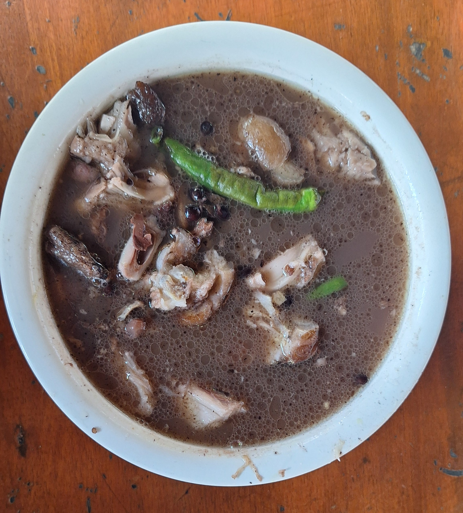

|
|
KBL (KADYOS, BABOY, KAG LANGKA)

An Ilonggo dish made with kadyos, baboy, and langka. KBL stands for kadyos, baboy, and langka, the three main ingredients. In Hiligaynon it is called Kadyos, Baboy, kag Langka.
KBL is cooked all over Iloilo and Negros, where batuan is the usual souring ingredient. Another well-known Ilonggo soup is cansi, which uses beef shank and unripe jackfruit. In KBL the kadyos soften, release their purple color, and give the broth a little more body than a clear sinigang.
INGRIDIENTS:
1. Kadyos (Pigeon peas): Dark purple or black pigeon peas give the soup its signature purple broth and slight thickening.
2. Baboy (Pork): Usually pork hocks (pata), trotters, or bony/fatty cuts like belly or shoulder—sometimes grilled first for extra smoky depth.
3. Langka (Unripe jackfruit): Cubed young green jackfruit adds body and absorbs the broth.
4. Batuan / Batwan: The traditional Western Visayas souring fruit (Garcinia binucao) that gives KBL its clean, sharp tartness
5. emongrass (tanglad): Bruised or sliced stalks simmered in the broth.
6. Onion, garlic, and/or ginger: Used to build the savory base.
7. Green finger chilies (siling haba): Whole or sliced for mild heat and aroma.
8. Sweet potato leaves (talbos ng kamote): Added right at the end so they stay bright.
9. Seasonings & water: Salt, ground black or white pepper, and water (some cooks also add a splash of fish sauce or a pork/beef broth cube).
INSTRUCTIONS:
1. In a pot with water, boil GRILLED pork for 30-45 minutes or until it becomes tender. Notice the emphasis on the "grilled" as cooking the pork over fire or charcoal gives the broth more flavour.
2. Add kadyos beans and langka cubes and boil for another 10-15 minutes until tender. For the langka, if you have big cube slices you can boil it together but if its thinner/smaller you can place it later.
3. When the three ingredients are soft, add batwan (and broth cubes if desired). Make sure that the jackfruit is already tender before adding the souring ingredient of choice. Make adjustments with the quantity of water if needed.
4. Season with salt and make flavor adjustments especially the sourness.
5. If desired, add kamote tops and cook for 1-2 minute/s.
|